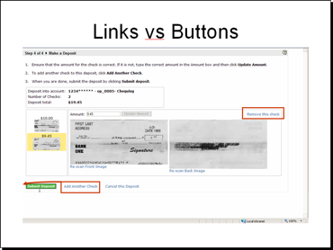

Validating the Design
Unlike most of our other products which are enterprise level applications, Consumer Deposit was targeted at small business owners and home users. Since the user types of this application differed from our usual audience, we placed a greater emphasis into validating the design through summative usability testing.
We developed a usability plan, outlining the process we were following along with the methodology, tools, materials, and so on needed to carry out the tests. At the same time we procured and configured out test environment. For this project, we used a laptop running the desktop web application connected with a flatbed scanner. On this laptop, we installed Morae Recorder and a version of the software running the new design.
Once completed, we recruited participants from other cross-functional teams in the office. Taking a lean approach, we conducted three tests of three participants each. We kept the number of participants low so that after each set of tests we could review the results, make updates to the application, and the re-test for each set of tests.
This approach proved invaluable as we were able to identify problems quickly and because we had access to and understanding of HTML and CSS, we could make rapid changes to the application. For example, one issue that came up during the first round of testing was confusion over the "scan" task. Due to ambiguous labeling on the page, users were unsure if they were supposed to click the Scan button on the page or press the Scan button on the physical scanner. By experimenting with a few variations, we were able to change the label to differentiate between what was displayed on the page and the physical scanner.
Following the usability tests, we published the findings, along with recorded video snippets, to the development team. As a result of this testing, I identified problems both at the presentation level and at the actual programming flow. The problems were prioritized and updates were made to the software in subsequent releases.
The Application
The application was targeted at small business owners, who could use their flat-bed scanners to make cheque deposits to their account. The scanner was controlled by a web application through a browser plugin.
At its most basic functionality, the application prompts the user for required information for making the deposit, then guides them through the capture of the front and back cheque images.


Unfortunately, the requirement of working with hardware running with third-party software can add significant complexity when the process does not work as expected. What was a simple workflow quickly expanded to manage a manual work-around scenarios.

Usability Plan
Before carrying out our usability test, we developed our usability plan, complete with objectives, research questions and expected qualitative and quantitative data we will obtain at the end of the evaluation.
We also determined what participants we wanted to include in our test. Initially, the plan was to include size participants from the Engineering department (who were not part of the project) and six participants from outside the Engineering group. However, this plan changed as I decided to experiment with have more tests with fewer participants. This approach would let me theoretically catch two-thirds of the issues in each phase but let me update the software in-between test rounds so I could then test the fixes by the next round. This approach made the test experience much more proactive since I could validate my "fixes" for previous test issues.
The methodology for this evaluation was intended to gather assessment data about the effectiveness of the application to capture images and then submit completed deposits. I collected information about error and success rates as well as qualitative data about participants' experiences using the application.
To ensure coverage of different parts of the application, participants and tasks were assigned follows:
| Participant | Blue-sky mode | Grid mode | Manual mode | Exceed cheque limit | Bad data cheque |
|---|---|---|---|---|---|
| 1 | |||||
| 2 | |||||
| 3 | |||||
| 4 | |||||
| 5 | |||||
| 6 | |||||
| 7 | |||||
| 8 | |||||
| 9 | |||||
| 10 | |||||
| 11 | |||||
| 12 |
For example, the task for participant 6 will have the participant use the grid and then the manual mode fall-back.
Session Outline and Timing
Each evaluation sessions will last for approximately 30 minutes. These sessions break out as follows:
| Activity | Time (minutes) |
|---|---|
| Introduction to the session | 2 |
| Background interview | 3 |
| Tasks | 20 |
| Debriefing | 5 |
| Total | 30 |
The Test
I conducted the evaluation over three separate groups. After each group, I reviewed problem areas and then updated the pages with small changes (i.e., graphics and/or text) to make the process easier. This approach let me see if my changes worked for the next group. For example, after the pre-test group, I changed the name of the Next Step button to Scan because the early users were confused when clicking Next Step initiated the scanner. When I tested this change with the "Blue sky" group, some users thought the instruction to "Click Scan" meant to press the button on the scanner. So, I then changed the button to Scan Check to test with the third group and did not see any more problems.
The following table shows a breakdown of tasks by group.
| Group | Description |
|---|---|
| Pre-test group | Two participants plus a UI review to address specific, known issues |
| "Blue-sky" group |
|
| "Dark cloud" group/td> |
|
For each session I read a short script to the participant that provided an introduction and orientation to the evaluation. This information explained the purpose and objective of the evaluation, my role as moderator, the laptop and scanner setup, the protocol for the rest of the session, and the importance of thinking aloud while working through the tasks.
Each session had the following structure:
- – Before having the participant begin, I conducted a brief background interview to confirm the participant's experience with home banking and using a scanner. This provided some context for the rest of the session.
- – Each participant received a set of cheques and a task sheet. For each cheque, the participant entered in the amount, scanned the front and back, and verified the cheque on the deposit review page. After scanning in their 4 cheques, the participant submitted the deposit. In the process, each participant worked through any additional tasks identified in the matrix.
- – Once the participant completed their tasks, Morae presented a short questionnaire prompting them for their preferences and other qualitative data. I also used this time to follow up on any particular problems that occurred during the session.
- – This evaluation took place in a reserved office space. The participants used a company laptop connected to one or two scanners (depending on their associated tasks within the matrix). The laptop ran Windows and Firefox. It used a current build of the Consumer Deposit application. The laptop also had Morae Recorder installed on it and a web camera attached. The Morae software recorded what is happening on the screen (as well as other data) while the web camera captures the participant's face and voice.
- – I sat in the room with the participant while conducting the evaluation. I introduced the session, conducted a short background interview, and then introduced tasks for the participant to complete. At times, I asked unscripted follow-up questions to clarify participants' behavior and expectations. I also took detailed notes and recorded the participants' behavior and comments.
- – Using my notes and the recordings, I tabulated and analyzed the data to answer the key questions (listed in the Objectives section of this document) with findings and recommendations. I provide these results in the final written report and presented it to the development team.


Results
As a result of testing, I discovered 18 areas where we could improve parts of the application. Some of the issues were relatively small and easy to resolve. These included missed instructions, poor wording, and confusing layout. , while others pointed to more systemic issues such as how to handle the Back button and it's impact on the browser session.
The results of the usability test were written up in a report that was delivered to the Engineering team along with a Powerpoint presentation of the highlights. One such highlight was the "links vs buttons" issue that arose when participants where required to click a button to perform a primary task. The Call to Action in this case was presented as a link and more than one participant missed it and was unable to complete the task.
The following excerpt from the write-up shows the name of the issue, slide, a summary of issue (and potentially larger issue), the recommendation, and the references of the issues: participant – time stamp of of the recorded event – summary of the event.
| Title | Links vs Buttons |
|---|---|
| Slide |  |
| Issue(s) |
|
| (Potentially) Larger Issue | Do people "get" the buttons vs link, primary vs secondary tasks. Some participants expressly said they liked them, others said they were too distracting. |
| Recommendation | Adding another check to the deposit is one of the primary tasks for this page. As such, the task's higher priority indicates that call to action should be represented as a button. |
| References |
|
{kind=link}